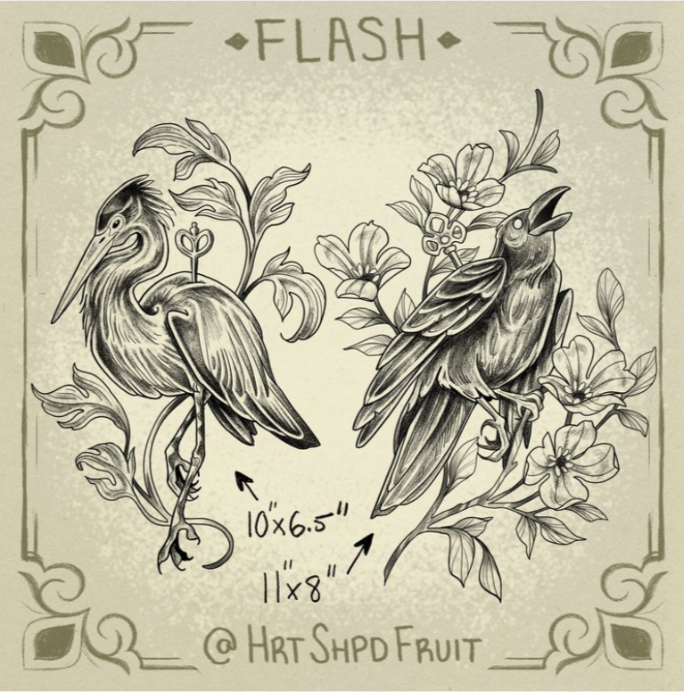
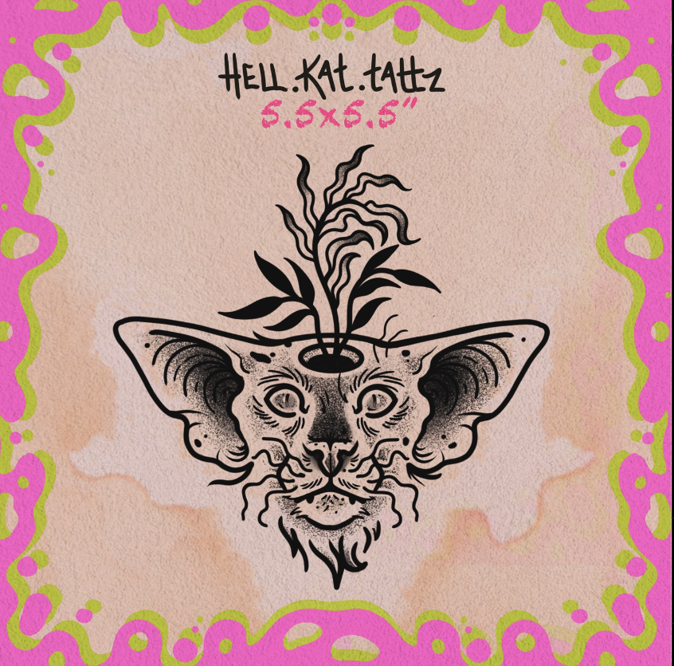
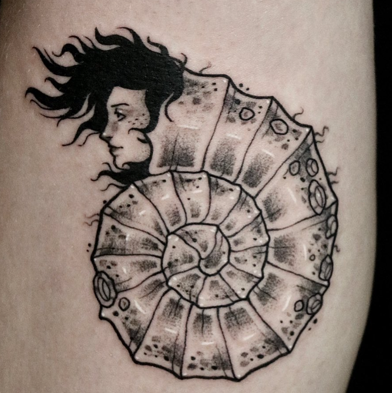

My Favorite Kamloops-Based

Sydney, also known as HRTSHPDFRUIT, is an tattoo artist, printmaker, and pyrographer who specializes in depicting plants, animals, and other delicate natural structures. She recently broke off from her previous studio to start her own. I have multiple tattoos from her, and she is always provides a positive, fun environment.

Kayla, also known as Hell Kat Tattz, is a tattoo artist at Fear City Tattoos and a digital artist. She tattoos a variety of subjects, but her art style of strong lines, saturated colors, and smooth shading always shines through. Her style is funky and unique, just like her bright personality. She has tattooed me many times, and I am always excited for her next flash that catches my eye.

Avery, also Known as Hutch Tattoos, is a tattoo artist, painter, and digital illustrator. They typically tattoo black-and-white natural pieces with a heavy hand of white ink highlighting. Their style of shading has a large variety of tones, creating the impression of a real, 3D piece about to jump off your skin. They are so kind and friendly to their clients, and always make them feel at home.